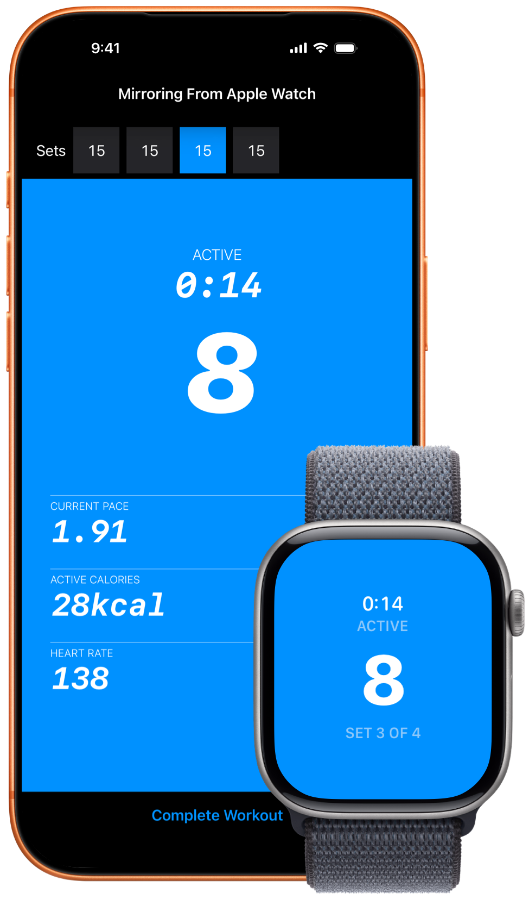

Pushanova Features
Follow a progressive program toward 100 push-ups, train freely without preset targets, or combine both in the same workout. Pushanova counts your push-ups and records your workouts on iPhone, iPad, and Apple Watch.

Free to start. No account. No ads.
Follow the Program and Train Freely
The progressive program has 50 levels in three stages. Each level is one structured workout with preset sets and push-up targets. Start at any level and move through the program at your own pace. The final level is one set of 100 push-ups.
Train freely whenever you do not want preset targets. You decide how many push-ups and sets to perform while Pushanova records the workout. You can return to the program for your next workout.
Completing a level does not end the workout. You can continue to train freely in the same session. Additional push-ups and sets are saved as part of that workout.
Pushanova does not require a daily or weekly schedule. You can repeat a level, take rest days, and continue when you are ready.
The first 10 levels are free. Pushanova Premium unlocks levels 11–50.
Automatic Push-Up Counting
On iPhone and iPad, place the device on the floor and do push-ups toward the front camera. Pushanova counts your push-ups as you move. Automatic counting does not take photos or record video.
On Apple Watch, Pushanova counts push-ups from the movement of your wrist. This supports floor push-ups and elevated push-ups on benches and horizontal bars.
You can also count one push-up each time you tap the screen. If you complete a workout without Pushanova, you can enter the sets and push-up counts by hand on iPhone or iPad.
Train on Apple Watch With or Without Your iPhone
Complete a Workout on Apple Watch
Start and complete a workout on Apple Watch without your iPhone nearby. The Watch app counts your push-ups and shows the current workout phase, push-up count, set, timer, pace, heart rate, and active calories.
Haptic feedback confirms push-ups and completed sets, so you do not need to look at the screen after every movement.
You can listen to music or podcasts and control media from Apple Watch during a workout.
Use Apple Watch and iPhone Together
Start the workout on either device. Apple Watch can count your push-ups while iPhone displays the same workout. The push-up count, sets, pace, rest, and other workout information stay synchronized.

See Workout Information While You Train
Pushanova shows the information you need during each part of a workout:
- Current phase: preparation, push-ups, or rest
- Push-up count and current set
- Workout timer
- Current and average pace
- Heart rate, when available
- Active calories
- Your highest number of push-ups in one set
A short countdown gives you time to get into position before the first push-up. During a program workout, Pushanova suggests 90 seconds of rest after a planned set. You can continue earlier or rest longer. When you train freely, rest time counts upward without a fixed target.
On iPhone, the current phase, timer, push-up count, and set remain visible on the Lock Screen and in Dynamic Island.
Pushanova also recognizes when you approach or pass your highest number of push-ups in one set. This is a personal record and is not compared with other users.
Review Your Workouts and Progress
Workout History
Every completed workout is saved. Review the sets, duration, active calories, notes, and how the workout felt. Heart rate, pace, and cadence are included when available. You can also create a share card or add workout information to a photo.
Workout history is free. Pushanova Premium adds more detailed pace, cadence, and heart-rate views for each workout.
Progress Over Time
Review push-ups, sets, pace, cadence, workout duration, heart rate, and active calories over recent weeks. A calendar shows the days when you trained. Weekly comparisons show how the current week compares with the previous week.
The calendar, weekly comparisons, and detailed progress charts require Pushanova Premium.
Recent Training Consistency
A gauge shows how consistently you have trained recently. Recent training days fill the gauge, and older days gradually have less effect. Missing one day does not reset it.
The same view is available in Home Screen, Lock Screen, and Apple Watch widgets. Lifetime totals and your highest number of push-ups in one set appear with it. These features are free.
Optional reminders can be scheduled for selected weekdays or at a repeating interval.
Use Pushanova Across Apple Devices
Pushanova is a full app on iPad, with automatic counting, program workouts, training without preset targets, workout history, progress, analytics, and Apple Health.
Your workout history can synchronize between your Apple devices through your personal iCloud account. Pushanova does not require its own account.
With your permission, Pushanova saves completed strength-training workouts to Apple Health. Heart rate and active calories are included when available.
You can start and save a workout without an internet connection. iCloud synchronization resumes when your device is online again.
Privacy and Reliability
Pushanova does not contain ads and does not sell your data. Push-up counting does not take photos or record, save, or upload video.
If Pushanova closes or a workout is interrupted, the active workout can be restored when you open the app again.
Free and Premium Features
Included Free
- The first 10 program levels
- Training without preset targets
- Automatic counting on iPhone, iPad, and Apple Watch
- Counting by tapping the screen
- Manual workout entry on iPhone and iPad
- Workout history, notes, and sharing
- Recent training consistency, lifetime totals, and your highest number of push-ups in one set
- Live workout information on the Lock Screen and in Dynamic Island
- Recent training consistency widgets
- Training reminders
- Apple Health and iCloud synchronization
Pushanova Premium
- Program levels 11–50 and the complete path toward 100 push-ups
- Workout calendar
- Weekly comparisons and the Home Screen widget
- Detailed progress charts
- Additional pace, cadence, and heart-rate details for each workout
Pushanova Premium is available as a yearly subscription or a lifetime purchase.
Start Your First Workout
Train freely for as long as you want or begin with one of the first 10 program levels. Automatic counting is free on iPhone, iPad, and Apple Watch.

No account. No ads.